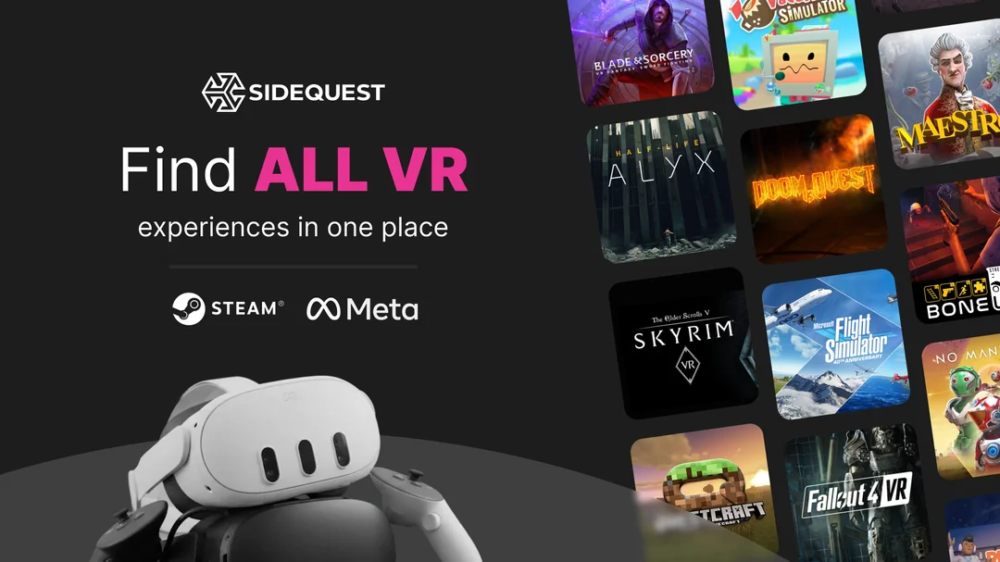

SideQuest VR · 2026
Building the Foundation: Cross-Store Catalogue Integration at SideQuest
Turning an ambitious, years-delayed platform initiative into a scoped, shippable project; and navigating the brand, developer, and organizational risks along the way.
Context
SideQuest set out to significantly expand its app catalogue by pulling in titles from Meta, Steam, and other stores so users could discover and compare VR apps in one place. To do that, the platform needed a system to integrate external app libraries and keep them automatically in sync. I came onto this project initially as scrum master, but as scope definition began, my role expanded into product decisions — particularly around UX, risk flags, and what the first phase should actually be.
Problem
The initial brief was essentially "integrate everything, from every store, across every region." Ambitious in the right direction, completely unfeasible as a single project. Beyond scope, there were real product risks nobody had fully worked through: would an influx of mainstream store titles bury the indie developer content SideQuest was known for? How would app developers react to losing direct control of their listings? What happened when synced data was wrong, outdated, or inappropriate?
And underneath all of it, a quieter organizational problem: this project had been on the roadmap for a long time, treated as priority #1 in planning conversations, but never given the sustained focus to actually finish.
My Approach
I started by collapsing the scope into something real. One early problem was that Design had no clear starting point — the concept was complicated enough that, without knowing what was technically feasible versus moonshot, they couldn't make meaningful progress. I worked with the engineering lead to translate technical constraints into boundaries Design could actually work within, which unblocked early exploration and prevented a lot of wasted sprints.
From there, we defined Phase 1 around a single clear problem statement: people need a better way to find information about apps to help them decide what to buy. Everything which didn't directly serve that was deferred explicitly, with a rationale attached, rather than left on a wishlist.
I also did a persona mapping exercise early in ideation to think through how the catalogue expansion would land differently across our core user types: the indie dev whose content risked being buried, the power user who wanted comprehensive discovery, the casual browser who just wanted better recommendations. That framing shaped several decisions that followed.
Risk flag #1: Brand dilution. If we suddenly surfaced hundreds of mainstream store titles, we risked burying the indie content that defined SideQuest's identity. I kept raising this throughout design and implementation. The solution that emerged was a "SideQuest only" quick filter — simple in concept, harder than expected to define technically, and initially not seen as worth the complexity by engineering. I collected relevant signal from our evergreen user feedback survey, made the case, and it shipped with v1.
Risk flag #2: Developer backlash. Integrating external listings meant developers could no longer fully control how their apps appeared on SideQuest. I flagged this early as a near-certainty. Leadership acknowledged it and decided to proceed as part of a longer-term platform strategy — their call to make, and one that made sense given the roadmap. But knowing it was coming let us add friction-reducing features rather than being caught off guard: new "report a problem with this listing" prompts, and a meticulous content filtering step in the integration pipeline that kept Support from being flooded.
The catalogue expansion also created a real opportunity to improve filter and sort options across the platform. We ran user research specifically on what filtering and sorting actually matched how people looked for apps, which informed the v1 feature set and gave us a baseline for measuring whether the new options got used as intended.
The QA work was more involved than typical. The integration introduced new failure points in a platform that had previously been entirely under our control, and the surface area for things going wrong — from copy errors to full data sync failures — was enormous. I worked closely with QA to prioritize test coverage given the complexity, and built documentation so that knowledge of the system wasn't siloed in the one engineer who architected it.
Then there was the organizational problem. For months, the project was nominally priority one, but kept getting interrupted by shorter-term work. Blockers took too long to resolve. A spicy team retrospective eventually surfaced the frustration — leadership wasn't in that retro, so I brought it to them directly afterward. We were given a greenlight to focus solely on this project for a month before the holiday break. It worked, in the narrow sense that we shipped. But it was reactive, required overtime from the whole team, and was the organizational equivalent of paying off debt with a high-interest loan.
Outcome
The integration shipped and is active. The system is built to scale, so we can add new stores and regions with a similar pattern.
The expansion meaningfully changed the platform's scale: our library grew from 10K to 25K titles. Most listings now have significantly richer media assets and user reviews, directly addressing longstanding complaints about stale content. App listing pages went from ~11K to 22K unique monthly visits — a 100% increase that has held steady three months post-launch.
Developer complaints about listing control came in as expected, many at first, but have since slowed to a manageable level. That's a known tradeoff the business accepted going in, and future roadmap plans that weren't possible with the old system should help make developers' lives easier over time.
The "SideQuest only" toggle has protected the platform's indie identity in the browsing experience. Additional filter and sort improvements have shipped in smaller follow-up iterations, chipping away at the highest-value items from user research feedback.
What I'd Do Differently
In the previous app listing version, we didn't have good per-page engagement metrics to cleanly measure before/after. I'd push to get better telemetry and a baseline retention funnel in place during early ideation, well before launch. We know the catalogue got richer and that people are visiting more listing pages, but we can't yet cleanly tell what they do after they get there. All critical actions on the new page are now instrumented, so we're building that data going forward.
The focused crunch month was the wrong answer to the right problem. We should have paused the project completely when higher-priority work arose, reset expectations with engineering, and restarted with a realistic commitment. We finished, but with burnout, and that cost doesn't show up in any launch metric. I'd also call the priority question much earlier. The signals were there and I read them as normal project turbulence rather than misalignment. As the person running the sprints, I was in the best position to surface that question and I waited too long.
On developer communication: I'm not sure earlier outreach would have changed the outcome, since the complaints were fundamentally about the product decision, not the surprise of it. But giving developers a preview of what was changing and why — before it shipped — might have converted some of the backlash into grudging understanding. Worth trying next time.